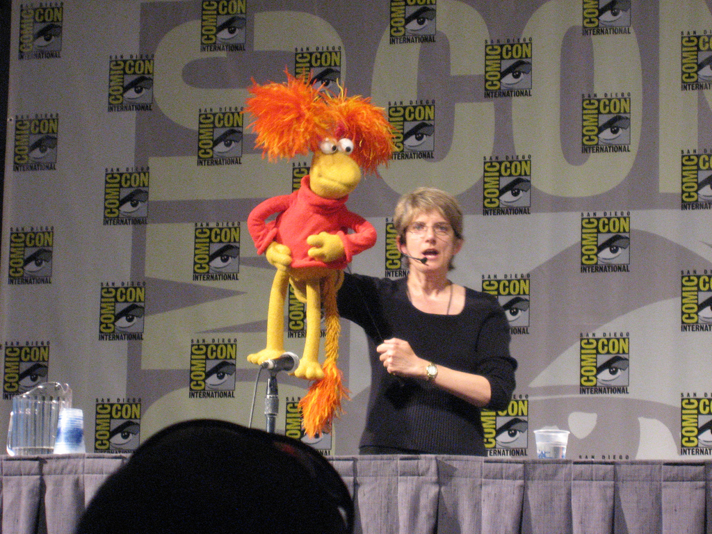
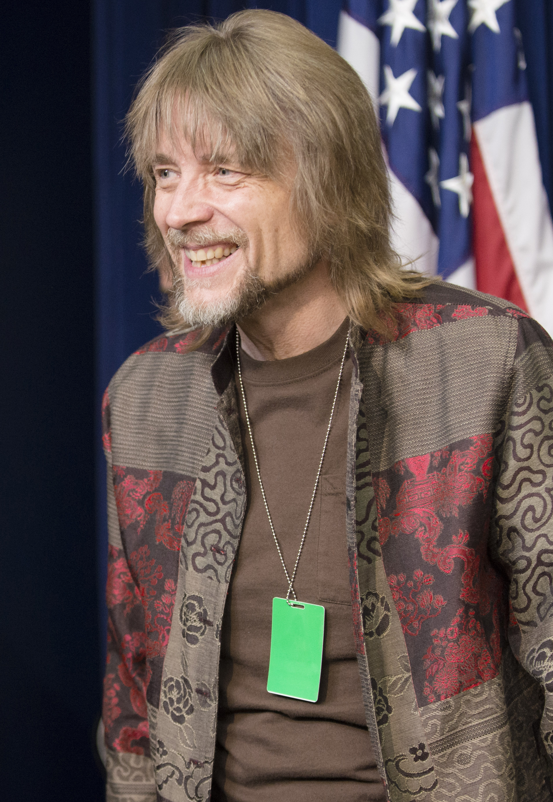

The complete Fraggle Rock cast list, including who played Gobo, Red, Mokey, Wembley, Boober, Doc, Sprocket, and the main reboot characters.
The main Fraggle Rock cast from the original series includes Jerry Nelson as Gobo, Karen Prell as Red, Kathryn Mullen as Mokey, Steve Whitmire as Wembley, Dave Goelz as Boober, and Gerry Parkes as Doc.
For Fraggle Rock: Back to the Rock, the key cast includes John Tartaglia as Gobo, Karen Prell as Red, Donna Kimball as Mokey, Jordan Lockhart as Wembley, Frank Meschkuleit with Dave Goelz as Boober, and Lilli Cooper as Doc.
The magic of Fraggle Rock came from performance first. Every laugh, wobble, song, and emotional beat depended on a cast that acted through fleece, foam, rods, and full-body creature suits.
FraggleRockFan.com

If you searched for "Fraggle Rock cast" or "cast of Fraggle Rock," this is the direct answer section most likely to match that intent.
The main original cast is Jerry Nelson, Karen Prell, Kathryn Mullen, Steve Whitmire, Dave Goelz, and Gerry Parkes. The main reboot cast is John Tartaglia, Karen Prell, Donna Kimball, Jordan Lockhart, Frank Meschkuleit, Dave Goelz, and Lilli Cooper.
| Character | Original Series Performer | Back to the Rock Performer |
|---|---|---|
| Gobo Fraggle | Jerry Nelson | John Tartaglia |
| Red Fraggle | Karen Prell | Karen Prell |
| Mokey Fraggle | Kathryn Mullen | Donna Kimball |
| Wembley Fraggle | Steve Whitmire | Jordan Lockhart |
| Boober Fraggle | Dave Goelz | Frank Meschkuleit (puppetry), Dave Goelz (voice) |
| Uncle Traveling Matt | Dave Goelz | Kevin Clash or Frank Meschkuleit (puppetry), Dave Goelz (voice) |
| Doc | Gerry Parkes | Lilli Cooper |
The original series cast is one of the strongest reasons the show still works decades later. These performers gave the five main Fraggles completely distinct personalities, rhythms, and singing styles.
Gobo: Jerry Nelson. Red: Karen Prell. Mokey: Kathryn Mullen. Wembley: Steve Whitmire. Boober: Dave Goelz. Doc: Gerry Parkes.
Jerry Nelson made Gobo feel adventurous without turning him into a generic hero. His performance gave the character confidence, curiosity, and just enough stubbornness to create conflict. Gobo works because Nelson played him as a real leader, not just the "main character."
Karen Prell's performance defined Red Fraggle as bold, athletic, competitive, and relentlessly energetic. Red could be funny, reckless, brave, and vulnerable in the same episode, and Prell made all of that feel natural.
Mokey needed warmth, thoughtfulness, and a believable artistic streak. Kathryn Mullen brought all three. Her performance gave the show a reflective center and helped its more spiritual or philosophical stories land emotionally instead of feeling abstract.
Wembley is one of the trickiest Fraggles to perform because indecision can get repetitive fast. Steve Whitmire kept him lovable, anxious, funny, and sincere. That balance is why Wembley often becomes a favorite for viewers who connect with his uncertainty.
Boober could have been reduced to one-note comic worrying, but Dave Goelz made him much richer than that. His Boober is fussy, fearful, practical, caring, and often unintentionally hilarious. That layered performance is a major reason Boober-centric episodes still resonate.
Uncle Traveling Matt works as both comic relief and social satire. Dave Goelz gave him the perfect blend of cheerfully wrong confidence and genuine wonder, turning each postcard from Outer Space into one of the series' signature recurring bits.
Cast searches often mix character names with performer names, especially for Wembley. This Steve Whitmire photo helps the page answer both intents without turning the cast guide into a full puppeteer index.
It also underlines a core point of the guide: Fraggle Rock acting was performance craft on camera, not just voices added later.

For North American viewers, Gerry Parkes is inseparable from Fraggle Rock. His Doc is absent-minded, kind, and quietly essential. He grounds the whole premise by making the human-world segments feel lived in rather than tacked on.
When people search "who played Doc in Fraggle Rock," Gerry Parkes is usually the answer they want.
Sprocket is not a human actor, but he is part of the cast search intent because he functions like a co-star. His reactions sell the idea that Fraggle Rock really exists just beyond the workshop wall. In both the original show and the reboot, Sprocket is crucial to the human-world scenes.
That is why cast lists often mention Sprocket alongside Doc, even when viewers are really asking about puppeteers and creature performance.
The original show also relied on major Henson performers beyond the core Fraggle Five. Richard Hunt is closely associated with Junior Gorg, while Jim Henson himself contributed to key characters including Cantus the Minstrel. The wider ensemble gave the show depth far beyond its five leads.
That is one reason broad cast pages matter: Fraggle Rock was always an ensemble piece, not just a five-character show.
Use this cast guide for performers and production context, then jump to the full characters guide for biographies, traits, and character relationships. If you want the performer side in more detail, go to the Fraggle Rock puppeteers guide.
The Apple TV+ reboot respects the original cast legacy while bringing in newer performers, a new Doc, and an updated production team. It works best when you see it as a continuation of the Fraggle performance tradition rather than a total reset.
Doc: Lilli Cooper. Gobo: John Tartaglia. Red: Karen Prell. Mokey: Donna Kimball. Wembley: Jordan Lockhart. Boober: Frank Meschkuleit with Dave Goelz. Uncle Traveling Matt: Kevin Clash or Frank Meschkuleit with Dave Goelz.
| Back to the Rock Role | Performer | Notes |
|---|---|---|
| Doc | Lilli Cooper | The reboot introduces a new Doc while keeping the outer-world bridge structure. |
| Gobo | John Tartaglia | Also central to the reboot's creative and puppetry leadership. |
| Red | Karen Prell | One of the most direct links between the original series and reboot. |
| Mokey | Donna Kimball | Brings a gentle but grounded presence to the role. |
| Wembley | Jordan Lockhart | Takes over a character closely associated with Steve Whitmire in the original series. |
| Boober | Frank Meschkuleit and Dave Goelz | Meschkuleit handles puppetry while Goelz continues the voice. |
| Uncle Traveling Matt | Kevin Clash or Frank Meschkuleit, with Dave Goelz voicing | The reboot keeps Matt recognizably connected to the original performance. |
| Ma Gorg | Aymee Garcia and Ingrid Hansen | Face and voice work are combined with in-suit performance. |
| Pa Gorg | Frank Meschkuleit and Andy Hayward | A mix of face, voice, and in-suit performance. |
| Junior Gorg | Dan Garza and Ben Durocher | The reboot continues the multi-performer creature approach. |
The reboot does not succeed by copying every beat of the original. It succeeds because it keeps the performance priorities intact: physical comedy, musical timing, emotional sincerity, and a sense that the puppets are living characters rather than effects.
Karen Prell and Dave Goelz give the reboot credibility with long-time fans. Their presence creates continuity that viewers can feel even when the cast around them has changed.
John Tartaglia is one of the key names modern viewers search for when looking up the reboot cast. His work on Gobo and his leadership in the production make him one of the most important figures in the newer era of Fraggle Rock.
The reboot also broadens cast interest with well-known guest voices including Daveed Diggs, Cynthia Erivo, Kenan Thompson, Brett Goldstein, Catherine O'Hara, Adam Lambert, Ariana DeBose, and Patti LaBelle.
Original series: Gerry Parkes. Back to the Rock: Lilli Cooper.
Dave Goelz voices Boober in the reboot, while Frank Meschkuleit performs the puppetry.
Yes. Karen Prell returned as Red Fraggle in Back to the Rock.
No. Fraggle Rock combines voice acting with puppetry, rod work, suit performance, and creature movement.
Explore the wider ensemble in Characters
Match cast favorites to stories in the Episode Guide
See how the performances were made in Behind the Scenes or Fraggle Rock Puppeteers
If you came here searching for the Fraggle Rock cast, the next best move is to connect those performers to the characters, episodes, and production craft that made the show last.